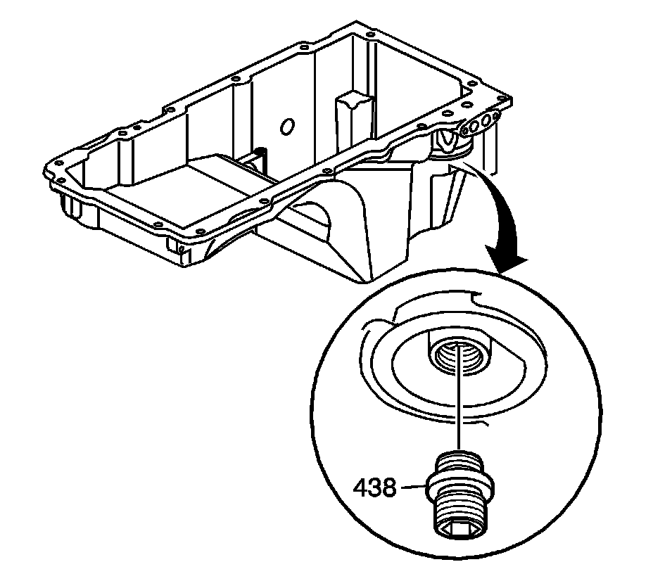
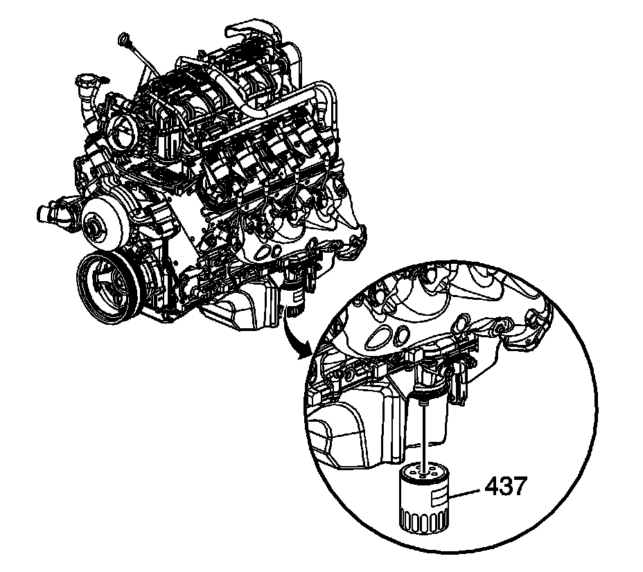

80. Oil Filter Installation
Oil Filter Installation

Notice: Refer to Fastener Notice.
1. Install the oil filter fitting (438).
Tighten the oil filter fitting to 55 N.m (40 lb ft).

2. Lubricate the oil filter seal with clean engine oil.
3. Install the oil filter (437).
Tighten the oil filter to 30 N.m (22 lb ft).